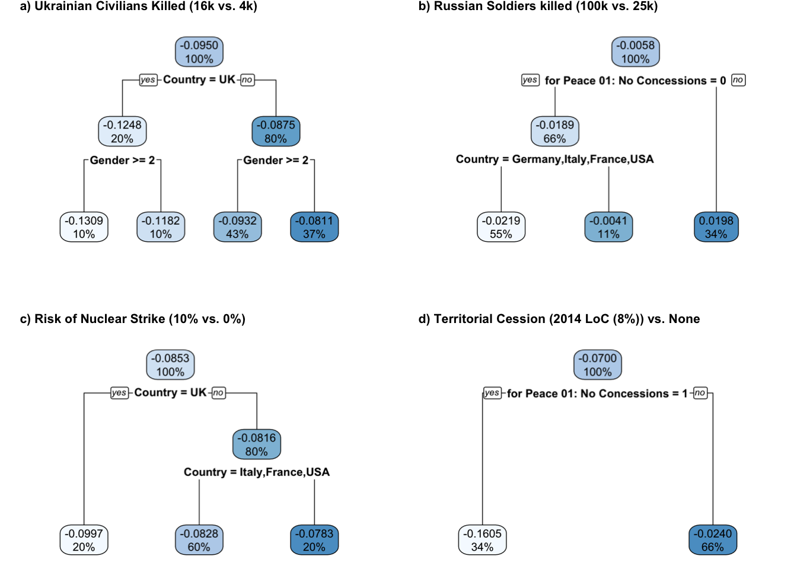

What really matters (and to whom): Investigating heterogeneous effects in high-dimensional conjoint analyses
Introduction
In the social sciences, conjoint analyses are a powerful research design to assess preferences in humans. Under the popular special case of forced choice designs, participants are presented with two options of choice from which they have to choose one, for example certain products in marketing research, or two potential candidates in political research on voting behavior. The two possible options are characterized by certain attributes (also: treatments), which can have different attribute levels (treatment levels), for example the attribute color of a car might have levels white, black, and blue. By randomly mixing the attribute levels and “forcing” participants to choose one of two options across multiple rounds, researchers are able to estimate the relative importance that participants give to certain attribute levels.
Arguably the most commonly estimated causal quantity in conjoint analyses is the average marginal component effect (AMCE). The AMCE is the effect of a specific attribute level of interest compared to another level of the same attribute, holding equal the joint distribution of all other attributes and averaged over this joint distribution as well as the sampling distribution from the population CITE. This quantity is estimable by regression models and provides us an effect of an attribute on the probability that a certain option (or profile) will be chosen. As the name AMCE suggests, this estimate is an average. That is, potential differences in effects among participants cannot be considered directly. However, this effect heterogeneity is often of interest, when trying to determine whether an attribute is equally important to all participants regardless of background covariates (e.g., age, gender, education, etc.) or whether there are subgroup differences. Ultimately, it is a question of generalization of results to the entire population and, even more advanced, of causal mechanisms in choice behavior.
The simplest approach to take into account potential effect heterogeneity in conjoint analyses is to estimate the AMCE-models in different subgroups, for example a model for all male and female participants. Although appealing due to its simplicity, this approach quickly reaches its limits and has additional downsides. First, it is not clear how to a priori define the subgroups let alone how and where to include certain interactions. If a continuous covariate age is included in the data, arbitrary splits into distinct groups are necessary. Potential interaction effects would have to be included manually with the likely chance to miss important ones. Needless to say, sample sizes in the subgroups are always smaller than in the whole sample as well, increasing the uncertainty in estimations. This leads to a second issue: conjoint data can quickly become high-dimensional due to many different pairings of different attribute levels (across attributes). Consequently, there are more combinations of attribute levels (and thus, possible options) that should be presented to participants than there are actual rounds of choosing per participant. This leads to some kind of “double high-dimensionality issue”: there are many different attribute (level) combinations and many potential covariates characterizing the participants. This results in a number of possible interactions that are intractable for classical methods (these interactions correspond to the effect heterogeneity mentioned above).
New Approaches to Handle Effect Heterogeneity under High-Dimensionality
To remedy the downsides of the “naive” subgroup approach outlined above, researchers developed more advanced methods based on machine learning. Most notable in this regard are (a) an approach based on Bayesian additive regression trees (in the following called cjbart CITE), (b) an approach based on Bayesian mixture of regularized logistic regressions (FactorHet CITE), and (c) a testing approach based on conditional randomization tests (CRT CITE). In this article, we focus on the explanation and demonstration of cjbart. At the end of this section, we briefly delineate similarities and differences in these three approaches.
cjbart
The premise of cjbart as introduced by CITE is that there are several nested causal quantities underlying the AMCE. Specifically, the AMCE can be decomposed into an individual-level (i.e., participant-level), round-level, and observation-level marginal component effect (IMCE, RMCE, and OMCE, respectively). Let us consider N individuals choosing between J profiles across K rounds (where in the simplest case of binary choices \(J = 2\)). In each round, an individual i is presented with J profiles in which the attribute levels of L attributes are assigned randomly. In the final data set, there are \(N \times J \times K\) rows and \(L + X\) columns (with X being the covariates characterizing the individuals). From these data we now want to estimate the causal parameters of interest, that is, AMCE, IMCE, RMCE, and OMCE. Nested in the AMCE described above, the IMCE is the change in probability that subject i choses a profile given a specific attribute level (compared to a reference level of the same attribute), again averaged over the effects of all other attributes. This corresponds to subgroup analyses of the AMCE with the convenient addition that the IMCE considers conditional effects based on all possible individual-level covariates. By inspecting the IMCE, effect heterogeneity due to non-randomized characteristics (i.e., the covariates) can be identified. The IMCE further contains the two lower-level quantities RMCE and OMCE. Because for each participant, there are usually multiple rounds of observations (i.e., choices), the RMCE can be obtained as the effect of an attribute within a specific round k of the experiment for a given individual i. Lastly, the OMCE is estimated by additionally conditioning on a specific profile-level (i.e., if \(J = 2\), by conditioning on one of the two profiles). As CITE note, the OMCE does not contain too much substantial information. It is, however, of statistical importance: assuming the OMCE is an independent random draw from an individual-level distribution, we can aggregate the OMCEs to estimate the IMCEs.
In the following, we explain how the IMCEs are estimated. IMCEs can be considered the most important quantity for our purpose of investigating effect heterogeneity because it allows us to analyze how attribute importances differ depending on participant covariates. CITE propose a three-step estimation procedure.
Step 1: Modeling Potential Heterogeneity
In a first step, potential effect heterogeneity is modeled. Specifically, some function is estimated that relates the attribute levels of the L attributes that were shown to subject i in the \(k^{th}\) round in profile j and the covariate vector \(X_i\) to the observed binary outcome \(Y_{ijk}\) (which is equal to 1 if the profile was chosen and equal to 0 if it was not chosen). CITE detail this estimation procedure using Bayesian additive regression trees (BART) but other appropriate models that can estimate this potentially complex functional relationship could be used as well. BART is a supervised learning model based on a boosting procedure: many small decision trees are trained subsequently, each one aiming to explain the residual variance of the outcome variable which was not explained by all previous trees. The “Bayesian part” in BART is that parameters are seen as random variables (instead of constants, as would be the case in frequentist approaches). An advantage of BART is its robustness to the choice of hyperparameters (e.g., the number of individual trees) but they could be tuned if necessary, for example by cross-validation. The data that is used to train the BART are the data resulting from the conjoint experiment; that is, the different choices of profiles as well as the covariates, which are invariant at the individual-level.
Step 2: Predicting Counterfactual Outcomes
In a second step, the estimated function from step 1 (i.e., the trained BART model) is used to predict counterfactual outcomes by changing the values of attribute levels. These predictions are counterfactual because they did not happen — but we assess what would have been chosen had a certain attribute level been set to a different attribute level of the same attribute. This is done repeatedly by drawing multiple times from a predicted posterior distribution, once with the altered attribute level and once with the reference level of the same attribute. By subtracting these results and averaging them over the multiple draws of the posterior, we arrive at a parameter estimate of the OMCE (i.e., observation-level effects).
Step 3: Calculating IMCEs
Following the nested causal quantities structure outlines above, IMCEs are calculated by averaging the OMCEs for each individual. Specifically, the OMCE estimates from step 2 are summed and divided by \(J \times K\), that is, the number of profiles times the number of rounds (which is the number of total observations).
Identification of Heterogeneity
As mentioned, the main reason why we employ these complicated procedures is because we want to estimate heterogeneous treatment effects. More specifically, we want to assess whether the effects of certain attribute levels on choice behavior are different across individuals. CITE provide two methods that yield information about which covariates are associated with heterogeneity in effects of attribute levels. Both methods are tree-based which is especially suitable to investigate heterogeneity because trees partition a data set into increasingly homogeneous groups. Thereby, they can reveal covariates that drive the heterogeneity as these covariates will be used for splitting the data.
Tool 1: Random Forest Variable Importance
The first tool uses random forests, an ensemble of decision trees, to investigate which covariates are the important ones in the prediction of differences in the IMCE distributions for all attribute levels (i.e., the effect heterogeneity). Specifically, for each attribute level, a random forest is trained where the covariates \(X_i\) are used as predictors. Subsequently, variable importance measures (VIMPs) are derived to assess which covariates are driving the data partitioning. Briefly, the VIMPs are calculated by permuting the covariates (i.e., by introducing random noise to its values). If predictions change noticeably, this is an indication that the covariate is important for predicting the outcome (i.e., IMCE distributions). Of note, this is done separately for every combination of covariate and attribute level because the importance of a certain covariate may differ with respect to different attribute levels. This results in a comprehensive VIMP-heatmap, which we show as an example in the results section.
Tool 2: Single Decision Tree Partitioning
By combining many weak decision trees, random forest have the advantage of increased predictive performance. However, this advantage comes at the cost of interpretability. Each tree only considers a random subset of predictor variables (in our case: subject-level covariates) and is trained on a bootstrap sample. Thus, CITE suggest a complementary analysis with single decision trees which are grown for a specific attribute level. In this analysis, a decision tree predicts IMCEs for this specific attribute level, again using subject-level covariates as predictors. The partitions within the tree can be readily investigated and interpreted as heterogeneity in IMCEs because only one model is fit to the data set and all predictor variables are considered for splitting. Importantly, to keep decision trees interpretable (i.e., to not let them grow too deep), they have to be pruned by setting a complexity parameter controlling the depth. CITE suggest to set this parameter such that the tree only continues to split the data if the increase in explained variance of the IMCE (i.e., \(R^2\)) is at least 0.02 to 0.04. The predictions in the terminal nodes of the tree correspond to conditional AMCEs, which would normally be assessed by estimating AMCEs in subgroups. However, by using decision trees, which are an exploratory tool by design, no subgroups have to be specified in advance. Even further, trees might even identify interaction effects between multiple covariates, for example by splitting twice on two different variables (e.g., Germans older than 30 years).
Data and Research Question
In the following, we showcase the application of cjbart to data provided by Prof. Dr. Paul Thurner and Fabian Haggerty from the Geschwister-Scholl-Institute of Political Science, LMU Munich. The data were first described in CITE. In their work, CITE aimed at investigating which attributes citizens from five different NATO-member countries (United States [US], United Kingdom [UK], Germany, Italy, and France) deem important when deciding whether Ukraine should be supported economically and militarily against the Russian aggression. For this, CITE conducted a conjoint experiment where \(N = 10,011\) participants from the five countries chose one of two possible profiles. In these profiles, nine different attributes with varying attribute levels were manipulated randomly to indicate the consequences that a support of Ukraine would entail if the profile was chosen. The different attributes, their corresponding levels, and the reference categories we used for our analyses are shown in TABLE. Additionally, subject-level covariates were assessed, for example, participants’ age, gender, political orientation, or their country of origin (of the five countries mentioned above).
| Attribute | Attribute Levels | Reference Category |
|---|---|---|
| Number of Ukrainian soldiers killed? | 1. 12,500 2. 25,000 3. 50,000 |
12,500 |
| Number of Russian soldiers killed? | 1. 25,000 2. 50,000 3. 100,000 |
25,000 |
| Number of Ukrainian civilians killed? | 1. 4,000 2. 8,000 3. 16,000 |
4,000 |
| Value of destroyed infrastructure in Ukraine? | 1. $50B 2. $100B 3. $200B |
$50B |
| [Country] contribution to military aid to Ukraine? | 1. X bn (0.1% of [Country] GDP) 2. X bn (0.2% of [Country] GDP) 3. X bn (0.3% of [Country] GDP |
0.1% of GDP |
| [Country] contribution to economic aid to Ukraine? | 1. X bn (0.1% of [Country] GDP 2. X bn (0.2% of [Country] GDP 3. X bn (0.3% of [Country] GDP |
0.1% of GDP |
| Risk of a Russian nuclear strike on Ukraine? | 1. Not present (0%) 2. Low (5%) 3. Moderate (10%) |
Not present (0%) |
| How much political self-determination of Ukraine? | 1. Full self-determination 2. No NATO/EU membership 3. Russian influence over Ukr. gov. |
Full self-determination |
| Territorial cessions of Ukraine to Russia? | 1. No cessions of territory 2. Crimea (ca. 4% of land) 3. 2014 Line of Conflict (ca. 8%) 4. 2023 Line of Conflict (ca. 16%) |
No cessions of territory |
To investigate which attributes and attribute levels matter when people decide whether Ukraine should be supported in their defense endeavors, CITE estimated AMCEs as well as marginal means for subgroup analyses. The results of their analyses will be outlined below, where we compare them to the results of our analyses using cjbart. As described above, the “classical” approach of estimating AMCEs and conducting subgroup analyses comes with the disadvantage that the potentially complex heterogeneity of attribute effects cannot be assessed. Additionally, subgroup analyses can only be carried out for a priori defined groups. If covariates have many different levels, it quickly becomes unfeasible to carry out all subgroup analyses. If covariates are continuous, it might even be impossible, unless arbitrarily chosen splits to discretize the data are performed.
Thus, the goal of this project is to complement the existing results reported by CITE with an exploratory analysis. Using cjbart, we are able to scrutinize the data for heterogeneity of attribute effects. Additionally, using the decision tree approach described above, we perform exploratory subgroup analyses. The goal of these analyses is to identify which groups differ in their preferences regarding specific attribute levels.
Method
Data of the above conjoint experiment was modeled by the previously described cjbart approach. For this, we used the R package cjbart described in CITE. We fitted a BART model containing the profile attributes and various subject-level covariates: age, country, gender, and political orientation, and subjects’ agreement on different statements regarding political statements (e.g., EXAMPLE). A list of all covariates, including their type, can be found in TABLE. This resulted in a trained BART model that was used to make the (counterfactual) predictions needed for calculating the quantities of interest, such as IMCEs or AMCEs.
In the next step, these (counterfactual) predictions were used to calculate OMCEs. These were aggregated to the different individual- and attribute-specific IMCEs.
To better understand the associations of different subject-level covariates and individual effects of specific attributes (i.e., IMCEs), we used the two tree-based approaches proposed by CITE. For this, a random forest model was first fit, predicting the IMCEs using the respective individuals’ subject-level covariates. We then used decision trees to more thoroughly investigate the relationships of specific IMCEs and covariates for which the previous step suggested relevant contribution to the prediction. As already proposed in CITE, we found complexity parameter values (cp) between 0.02 and 0.04 to yield useful results. Usage of larger cp values resulted in overly simplified trees often consisting of only a single root node. Smaller cp values, on the other hand, often resulted in overly deep trees with little differentiation across many terminal nodes, making the interpretation of substantive differences too difficult. In the next section, we present the results of these analyses, followed by a discussion and comparison to the results reported by CITE.
Results
Global AMCEs
Figure 1 displays the variable importance measures for the subject-level covariates as extracted from the cjbart model. Variable Importances are colorized using heatmap-like colorcoding with stronger red (vs. white) color indicating larger importance measures.

@image-panel depicts 4 exemplary decision trees that were fitted to better understand how different subject level covariates contribute to effect heterogeneity. These decision trees were selected based on content-related and interpretational criteria and to highlight how single decision tress can be utilized for model interpretation.
Discussion
Integration of Results
-When using additional covariates results change quite a bit –> country still relevant but rather for the risk nuke and civ killed –> gender also still for civ killed –> especially the 3 questions q10_10, q15_7 and q3_3 are also relevant –> describe questions and interpret
-Vergleich mit “normaler” Subgruppen Analyse –> aka vergleich mit deren paper
Methodological Discussion
Discussion & Limitations -Tuning -Wie viele Covariates (inference vs. exploration) -Stabilität
-weitere Modelle: -factorHet + idee kurz -CRT + idee kurz Warum cjBart
das Modell stark machen